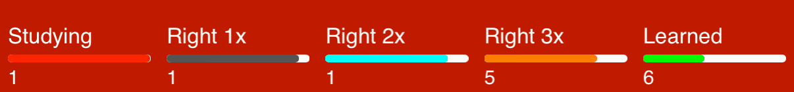
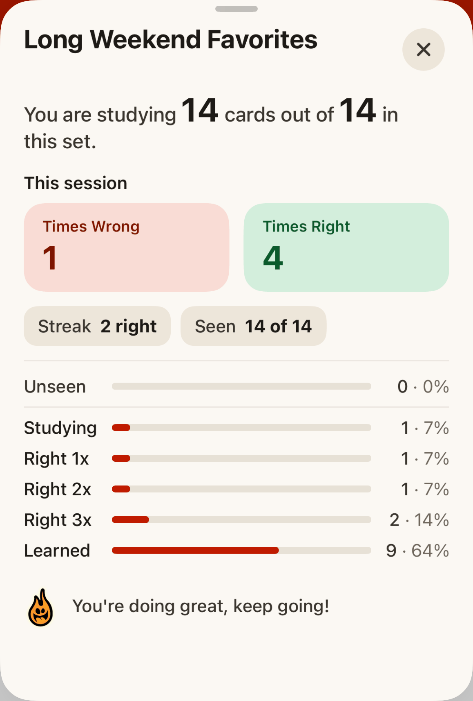

Practice
In Practice Mode, each card shows just the word. Tap Show answer (or tap the card) to see the reading and meaning, then mark yourself Wrong or Right.
Already know a card? Tap Learned to mark it learned (the same as the Learned progress column). With Hide Learned Cards on in Difficulty settings, those cards stop coming up in practice.
Tap Actions to add the card to a study set, share it, or report a mistake with Fix Card.
The first time you get a card right, it moves from Studying to Right 1x. Each right answer after that moves it up one level: Right 2x, Right 3x, then Learned.

Get it right 4 times in a row and it is Learned. A wrong answer at any level sends it back to Studying. Tap the progress bar at the top of the card to open the progress pop-up, which shows detailed results for the current set.
Note that cards that are Learned will still appear - just much less often. Japanese in a Flash! is making sure you haven't forgotten them!

Your goal is to get each card right 4 times. Good luck!